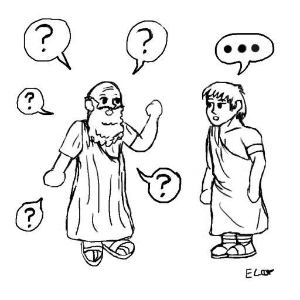

Creating a Socratic Chatbot
“An unexamined life is not worth living” (Socrates), let’s examine your strongest beliefs
Introduction
Conversational interfaces are becoming more and more prevalent in today’s society. However, computerizing conversation is a tricky domain with lots of tradeoffs. Chatbots have the power to be inspiring and benevolent innovations, or have threatening and negative outcomes. Throughout this project, I hope to navigate the vast wilderness that is conversational interface with the intension of designing a chatbot that can explore and resolve tension.